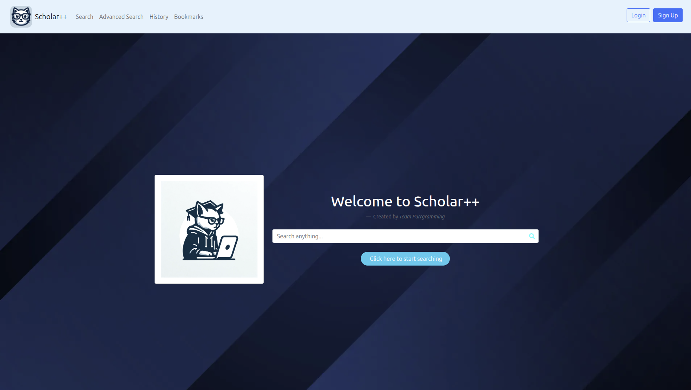

created using Python & Django

Scholar++ is a scholarly search engine designed to help users discover and explore academic content including research works, authors, concepts, venues and institutions.
The aim of the project was to provide a user-friendly interface for searching academic data while also giving users access to detailed information, statistics and relationships between different scholarly entities.
The project was developed as part of a team and integrates data from the OpenAlex API to provide access to a large collection of scholarly information.
Scholar++ was developed as a collaborative team project. The application combines a Django backend with a responsive web interface built using HTML, CSS, JavaScript and Bootstrap.
The system connects to the OpenAlex API to retrieve live scholarly data. Asynchronous libraries including aiohttp and asyncio were used to support efficient data retrieval, while Django handled routing, authentication and application logic.
The project also incorporated analytical and visual components through pandas and Chart.js, allowing scholarly information to be presented in a more accessible and informative way.
Scholar++ was created as part of Team Purrgramming. Working collaboratively on the project involved coordinating development, integrating different parts of the application and contributing to a shared codebase.
The project gave me experience working within a larger software development team and contributing to a full-stack web application built around an external API.
The application was originally deployed on a Raspberry Pi and made publicly accessible through the scholarplusplus.org domain.
The original Raspberry Pi deployment is no longer active, so the application currently needs to be run locally for demonstration.